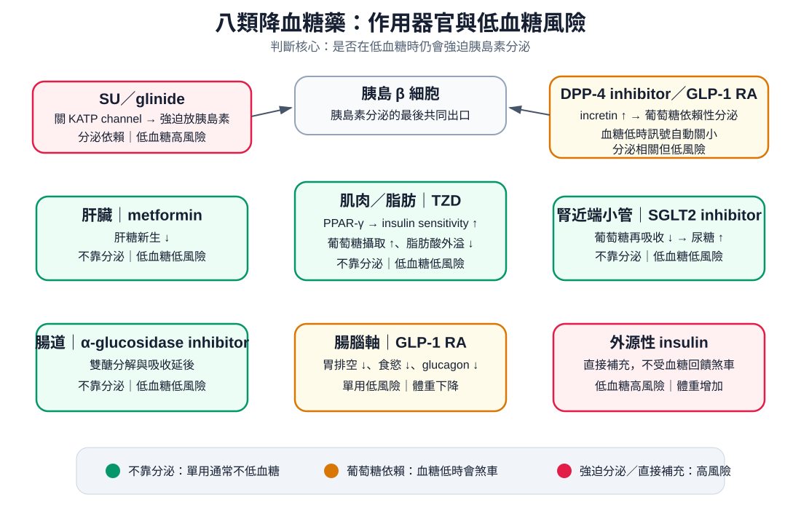

藥物
Antidiabetics ｜ 降血糖藥總論 · 口服降血糖藥與胰島素
筆記更新 2026-07-28·整理狀態：可用
其他名稱 12
Antidiabetics · 降血糖藥 · 口服降血糖藥 · OHA · Metformin · SGLT2 inhibitor · GLP-1 receptor agonist · DPP-4 inhibitor · Sulfonylurea · Insulin · Pioglitazone · Acarbose
機轉 Mechanism
八類藥作用在不同器官，但判斷低血糖風險只問一件事：會不會在血糖已經低的時候，還繼續強迫胰島素分泌（或直接補上胰島素）。

作用器官總圖：綠＝不靠分泌（單用通常不低血糖）、橘＝葡萄糖依賴性促泌（血糖低時會煞車）、紅＝強迫分泌／直接補充（低血糖高風險）。GLP-1 RA 同時作用在 β 細胞與腸腦軸，所以圖上出現兩次。
全類藥橫向對照
| 藥類 |
代表藥 |
機轉一句話 |
低血糖 |
體重 |
心腎效益 |
一定要記的那一件事 |
| Biguanide |
Metformin |
肝：肝糖新生 ↓ |
低 |
中性至微降 |
中性 |
eGFR ＜30 停用；長期用會缺 B12 |
| Sulfonylurea |
Glimepiride、Glipizide、Gliclazide |
β 細胞：關 K-ATP 通道 → 強迫放胰島素（不看血糖） |
最高 |
增加 |
中性 |
兩欄都輸；低血糖可持續一整天以上 |
| Glinide |
Repaglinide、Nateglinide |
β 細胞：同一個 K-ATP 通道，但起效快、作用短 |
中 |
增加 |
中性 |
隨餐吃、不吃就不吃藥；打餐後高峰 |
| Thiazolidinedione |
Pioglitazone |
肌肉／脂肪：PPAR-γ → 胰島素敏感性 ↑、脂肪重分布 |
低 |
增加 |
心衰竭惡化 |
NYHA III–IV 才是仿單禁忌；水腫、骨折、膀胱癌 |
| DPP-4 inhibitor |
Sitagliptin、Linagliptin |
β 細胞：腸泌素不被降解 → 葡萄糖依賴性促泌 |
低 |
中性 |
中性 |
是中性不是減重；不建議與 GLP-1 RA 併用 |
| SGLT2 inhibitor |
Empagliflozin、Dapagliflozin |
腎近端小管：葡萄糖再吸收 ↓ → 尿糖排出 |
低 |
下降 2–3 kg |
心衰竭＋慢性腎病都有益 |
euglycemic DKA；禁食／手術前要停 |
| GLP-1 receptor agonist |
Semaglutide、Liraglutide、Dulaglutide、Tirzepatide（GIP／GLP-1 雙重） |
β 細胞＋腸腦軸：葡萄糖依賴性促泌＋glucagon ↓＋胃排空 ↓＋食慾 ↓ |
低 |
下降最多 |
ASCVD 與腎臟有益 |
甲狀腺髓質癌／MEN 2 禁用（Byetta、lixisenatide 例外） |
| α-glucosidase inhibitor |
Acarbose、Miglitol |
腸：刷狀緣 α-glucosidase ↓ → 雙醣分解與吸收延後 |
低 |
中性 |
中性 |
低血糖時只有葡萄糖有效、蔗糖無效 |
| Insulin |
速效／短效／中效／長效 |
外源性補充：直接補胰島素，不受血糖回饋煞車 |
最高 |
增加 |
中性 |
沒有劑量上限、降糖力最強 |
各類藥細節
禁忌與陷阱
相關連結
SOURCE & CONTEXT
來源與原始筆記
114-1 醫學(三) 54、114-2 醫學(三) 57、115-1 醫學(三) 67、115-1 醫學(三) 56 延伸；ADA Standards of Care；KDIGO 糖尿病合併慢性腎病指引；ACR Manual on Contrast Media（metformin 與顯影劑）；2024 多學會 GLP-1 receptor agonist 圍術期共識；美國 FDA 圍術期停用 SGLT2 inhibitor 安全通訊；健保署《藥品給付規定》第 5.1 節；各藥仿單
下載這篇 Markdown ↗網站保留原筆記的內容與整理狀態。